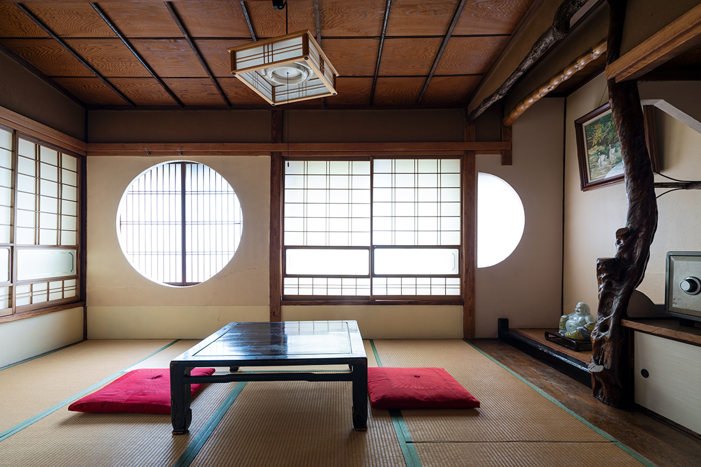
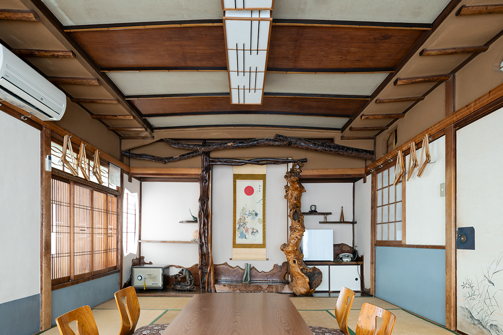
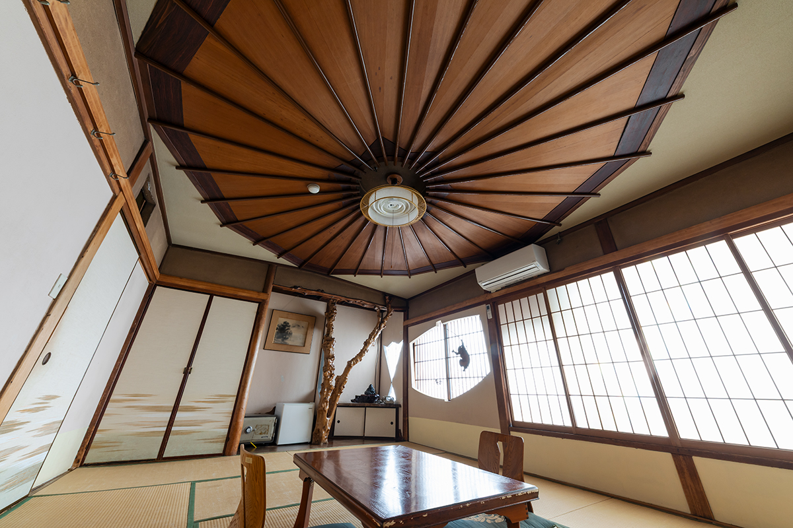

Токио · Хонго · архитектура
Homeikan в Хонго: рёкан, где нет двух одинаковых комнат

Главному зданию рёкана Homeikan в Хонго больше 125 лет. Оно начиналось как пансион, а после войны хозяин, страстный любитель строительства, превратил каждую комнату в отдельную работу плотников.
История
Пансион, который стал рёканом
Хонго, квартал в токийском районе Бункё, когда-то был полон пансионов и гостиниц. О том времени напоминает главное здание рёкана Homeikan, деревянный дом, который до сих пор показывает, как в Японии принимали гостей.
Дом построили в 1898 году как пансион, его открыли ещё в эпоху Мэйдзи. До войны здесь одновременно сдавали комнаты жильцам и принимали путешественников, а после Второй мировой войны открылось заново, уже как рёкан. Решающим стал 1936 год: здание купил хозяин, увлечённый строительством. Японцы называют такую страсть «фусин-дораку», то есть строить и перестраивать ради удовольствия.
После войны комнаты переделали, и на это ушло множество ценных пород дерева и столярных деталей. В итоге в доме нет двух одинаковых комнат, и каждая устроена так, чтобы гостю было что разглядывать. Здание внесено в реестр охраняемых объектов культурного наследия Японии.
Комнаты
Дерево с рынка и фантазия плотника
Хозяин ходил на рынок лесоматериалов, находил понравившееся дерево и вместе с плотником придумывал под него комнату. Так отделка каждой комнаты рождалась из особенностей дерева.

В комнате «Асахи» в нише стоят колонны из дзельквы, а под самым потолком их соединяют изогнутые брусья. Середина потолка плавно выгибается дугой. Работа очень тщательная.
Комната «Эбису» собрана из добрых знаков. Потолок повторяет раскрытый зонт: в Японии расходящаяся к краям форма считается приметой растущего благополучия. Колонна в нише сделана из гранатового дерева, и её изгибы напоминают дракона, который поднимается к небу. Окно вырезано в форме волшебного молоточка удачи, а в деревянной решётке кумико сидит с удочкой Эбису, бог удачи и рыбной ловли.

Красивое дерево с выразительным рисунком в Японии ценили ещё в эпоху Эдо, а в новое время на рынке появилось гораздо больше пород. Как показать каждый кусок дерева с лучшей стороны и как порадовать того, кто войдёт в комнату: эти мысли хозяина и плотника тоже часть японской традиции.
Здание
Следы пансиона
Когда-то комнаты выходили во внутренний двор. Нынешний вестибюль появился, когда пансион перестраивали в рёкан: часть двора тогда накрыли крышей. В отличие от обычного рёкана, у комнат почти нет прихожих, и это тоже память о временах пансиона.
Дом деревянный, в два этажа и с подвалом, крыша покрыта черепицей. Рядом стоит второе здание, Daimachi, которое власти Токио включили в список исторических построек города. В нескольких минутах ходьбы находится третье, «Морикава», его строили как гостиницу для групп. В 2025 году в Homeikan предлагали и дневные визиты: комнату можно было взять для удалённой работы или для встречи с подругами.
После 30 апреля 2026 года главное здание и Daimachi закрылись на ремонт, дата открытия не объявлена.
Homeikan, главное здание
- Адрес
- Токио, район Бункё, Хонго, 5-10-5
- Телефон
- +81 3-3811-1181
- Часы работы
- 9:00–21:30 (после 30 апреля 2026 года закрыто на ремонт, дата открытия не объявлена)
- Выходные
- среда, четверг, 29 декабря–3 января
- Цены / Вход
- разные дневные тарифы
- Сайт
- homeikan.com
Фото: Тосихиро Собадзима.